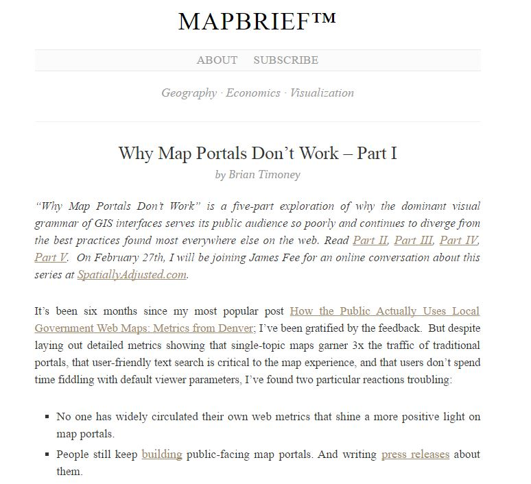
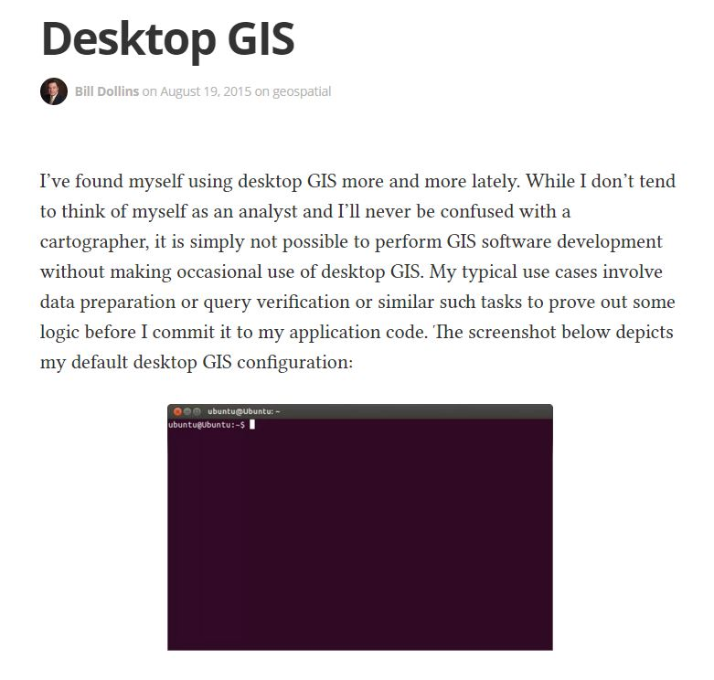

An Overview of GIS in Emergency Management
Follow along at:
http://joshgroeneveld.github.io/ gis-em
Background
What is emergency management?
Coordination, coordination, coordination
How does it work?
There are four phases of emergency management
Response
Response always starts at the local level and works up
When local resources are overwhelmed, seek help from neighbors and the next level up
The same goes for the county and the state
NIMS and ICS
Recovery
Recovery is all about getting back to the new normal
For small events, this could take days or weeks
For large events, it could take years
Mitigation
Reducing risk from potential hazards before a disaster happens
Spending money on mitigation before a disaster
saves money after a disaster
Preparedness
If we as citizens can be prepared beforehand, resources can go to places with the most need during response
Shameless plug:
Those in emergency management regularly exercise their capabilities to test their preparedness
We use lessons learned from exercises to build up our capabilities
GIS is useful in different ways for each phase of the cycle
These phases are not mutually exclusive
Tools
Several GIS based tools exist in emergency management
The tools shown here are only a sample of what is available
One of these tools is something you're already familiar with
 Paper!
Paper!Paper maps are still critically important to both incident command as well as emergency management
GIS hazard analysis tools tend to be hazard-specific
HAZUS: earthquakes, floods and hurricanes
InaSAFE: multiple hazards -- free and open source
There are many apps for performing damage assessment, some of which rely heavily on maps
Bottom line: emergency managers need the power of GIS tools to analyze incident data and make decisions
Success Stories
In recent years, we have had the most exeperience dealing with wildfires
In summer of 2012, we had a number of fires exceeding 10,000 acres
Several of these fires caused evacuations and a lot of road closures
We started maintaining simple Google Maps for these fires
Overall, we created 19 maps that received a combined total of over 1.2 million views
If your agency creates a web map during a disaster, it needs to look official
Following the 2012 fire season, GIS professionals from three state agencies realized that they were all trying to collect the same data
In 2013, we began working together to share maps and perimeter data
Sharing data is a really good idea!
Challenges
Even with the best planning possible, new challenges and problems will come up during a disaster
Disaster response is not the time to learn new techniques and processes
During a disaster, what counts as authoritative data and information?
How do we handle social media and other volunteered damage reports?
These challenges are not insurmountable
Good planning makes all the difference
The Way Forward
One of the keys to solving the challenges we face is building strong partnerships
Without good partnerships, it's a lot more difficult to get our job done
There are more networking opportunities available through the UGIC Conference, Maps on the Hill, and local GIS user groups
Also important are partnerships with GIS professionals who have been through a disaster before
Organizations like
NSGIC,
NISC, and
NAPSG and others help make this happen
How to Get Involved
Are you interested in getting into emergency management?
Great! There are a number of
free training courses available through
FEMAWhat degrees do emergency management professionals have?
Emergency management professionals are a diverse group
Some people have degrees in geography or GIS
Others have degrees in urban planning, business, accounting and finance...
...communications, journalism, public policy, computer science and more!
One of the best ways to get a job in emergency management is to get a internship
You could also volunteer at one of the many agencies involved in disaster support
What other skills could be useful?
Coding!
Any eye for good design

"Never make a map that you wouldn't wear!"
...but, "A bad map on time is better than a good map that is late"
Problem solving!

Both GIS and emergency management require good problem solving on a daily basis
Takeaways
Emergency management is all about coordination
Good coordination requires strong partnerships with agencies from all jurisdictions
GIS is a necessary function of emergency management
The power of GIS in emergency management is both map making and data analysis
You can get involved in emergency management and GIS by volunteering or through an internship
Success in either GIS or emergency management is not about pushing buttons
Success is based on solving problems in a timely manner
Thanks!
Contact me:
Josh Groeneveld @joshgroeneveld
jgroeneveld@utah.gov